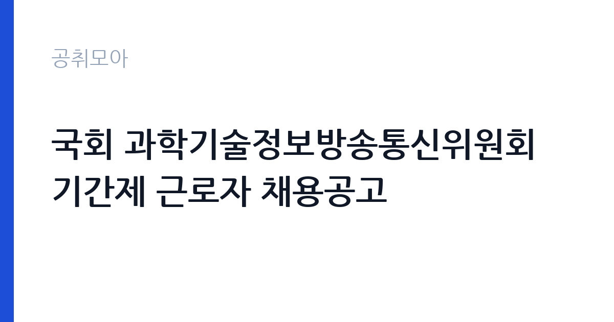

[국가기관] 국회 과학기술정보방송통신위원회 기간제 근로자 채용공고
국회 국회사무처 · 서울 · 마감 2026-11-05 (D-3) · 출처 나라일터

한눈에 보는 모집 조건
| 기관 | 국회 국회사무처 |
|---|---|
| 공고명 | 국회 과학기술정보방송통신위원회 기간제 근로자 채용공고 |
| 고용형태 | 기간제 |
| 근무지 | 서울 |
| 게시일 | 2026-11-02 |
| 마감일 | 2026-11-05 (D-3) |
지원자격, 이렇게 읽으세요
- 기간제근로자 1명
- 접수 ~2026-11-05 마감
- 세부 조건은 원문 공고문 확인
기간제 근로자는 근로계약 기간이 정해진 신분입니다. 계약 기간과 갱신 가능 여부가 근로계약서에 명시되며 기간 만료 시 근로관계가 종료됩니다. 결원 보충이나 특정 사업 기간에 맞춰 채용되는 경우가 많아 업무 범위가 명확합니다. 이번 공고는 국회 국회사무처가 직접 진행하는 자체 전형입니다. 기간제근로자(공무직) 채용으로 채용기간은 2026년 11월 16일부터 12월 31일까지입니다. 응시자격과 제출서류는 첨부 공고문에 제시되어 있으므로 원문을 기준으로 준비해야 합니다. 국회 근무 특성상 신원 확인과 보안 서약 절차가 있고, 회의 기간 중 일정 조정이 가능해야 합니다. 선발은 1차 서류전형과 2차 면접시험으로 진행되며 면접은 11월 11일 예정입니다. 접수는 담당자 이메일로 받고 11월 5일 17시 도착분까지 유효합니다. 응시 자격 판단이 애매하면 접수 전에 채용 담당 부서로 문의하는 편이 안전합니다. 경력 요건은 총 경력이 아니라 해당 직무 경력만 인정하는 경우가 있으니, 증명서의 직무 기술을 함께 확인하십시오. 학력이나 전공 요건이 없는 공고라도 제출서류 목록은 그대로 적용되므로 서류 준비 부담은 줄지 않습니다.
이 공고의 포인트
이 공고의 첫 번째 포인트는 고용 형태입니다. 계약 기간이 정해져 있어 근무 종료 시점이 명확합니다. 그만큼 짧은 기간에 어떤 실적을 남길지가 중요해집니다. 두 번째는 업무 범위가 명확하다는 점입니다. 위원회 회의장 운영 지원 직무로 채용되므로 배치 이후 담당 업무가 크게 흔들리지 않습니다. 세 번째는 근무지입니다. 서울 지역 근무로 접근성은 좋지만 그만큼 지원자가 몰리는 지역이므로 경쟁률을 넉넉히 잡아야 합니다. 같은 기관의 다른 공고와 접수 기간이 겹치므로 중복 지원 가능 여부를 확인해야 합니다. 같은 직무 공고 중에서는 접수 마감이 가장 빨라 일정을 앞당겨 잡아야 합니다. 다만 선발 인원이 1명으로 많지 않아 자격을 갖춘 지원자가 몰리면 경쟁률이 높아질 수 있습니다.
전형은 어떻게 진행되나
1차 서류, 2차 면접의 2단계로 진행되는 구성이 일반적입니다. 서류에서는 자격 요건과 경력 증빙을 확인하고, 면접에서는 실제 업무 수행 능력과 조직 적응을 봅니다. 직무에 따라 필기시험이나 실기, 컴퓨터 활용 시험이 추가되기도 하므로 공고문의 전형표를 먼저 확인하십시오. 단계별로 합격자만 다음 전형에 응시할 수 있고, 단계마다 응시 자격 확인 서류를 다시 제출해야 하는 경우가 있습니다. 최종합격자 발표 후에는 신원조회와 채용 신체검사가 남아 있습니다. 경력 증명서에 직무 내용이 적혀 있지 않으면 인정받지 못할 수 있으므로 상세 기재를 요청하십시오.
원문에서 확인한 전형 방식
국회 과학기술정보방송통신위원회에서 기간제 근로자를 다음과 같이 채용하오니 많은 응시 바랍니다. ㅇ채용 분야 : 위원회 회의장 운영 지원 및 관련 기타 행정업무 지원 ㅇ채용예정직위 : 기간제근로자(공무직) ㅇ채용기간 : 2026.11.16.(월) ~ 2026.12.31.(목) ㅇ공고기간 : 2026.11.2.(월) ~ 2026.11.5.(목) ㅇ선발방법: 1차 서류전형, 2차 면접시험(11.11.) ㅇ접수방법 : 채용 담당자 이메일 제출(kho0307kr@assembly.go.kr) ※ 11. 5.(목) 17시 도착분까지 유효 ㅇ담당부서(연락처) : 과학기술정보방송통신위원회 채용 담당 (T. 02-6788-5234) ※ 기타 자세한 사항은 첨부 공고문을 참고하시기 바랍니다.
이런 분께 추천해요
- 회의·행사 운영 지원 경험이 있는 분
- 장비 점검과 문서 작성이 가능한 분
- 단기간 집중 근무 일정을 수용할 수 있는 분
지원 전 체크리스트
- 응시자격 요건과 경력 기준을 충족하는가 — 경력은 증명서로 입증해야 합니다
- 계약 기간과 근무 시작일·종료일을 확인했는가
- 제출서류 목록을 모두 준비했는가 — 누락 시 서류 단계에서 탈락합니다
- 접수 마감 2026-11-05 이전에 접수 방식을 확인해 제출했는가
모집 일정과 제출 타이밍
접수 마감은 2026-11-05이고 공고는 2026-11-02에 게시되었습니다. 준비 기간 3일 안에 서류 작성, 증빙 발급, 접수를 모두 마쳐야 하므로 주말을 포함해 일정을 미리 나누는 것이 좋습니다. 특히 경력 기술서나 직무수행계획서를 요구하는 공고는 작성에 시간이 걸리므로 첫날 초안을 잡으십시오. 서류 합격자 발표와 면접 사이 간격이 짧은 경우가 많아 면접 예상 질문은 서류 제출 전에 정리해 두는 편이 유리합니다. 마감 직전에는 접속이 몰리므로 여유를 두고 제출하십시오. 서류 발표일과 면접일 사이가 짧은 경우가 많아 면접 준비는 접수와 동시에 시작하는 편이 좋습니다.
직무 이해하기: 국가기관
국회 과학기술정보방송통신위원회의 회의장 운영 지원 업무는 회의가 원활히 진행되도록 현장을 준비하고 지원하는 일입니다. 회의 일정에 맞춰 좌석과 명패, 음향·영상 장비를 점검하고, 회의 중에는 발언자 전환과 자료 배포를 지원합니다. 회의록 작성을 돕기 위한 녹음·속기 자료를 확인하고, 회의 종료 후 회의장을 정리합니다. 위원회 자료 접수와 배부, 방문객 안내 같은 행정 지원도 함께 붙습니다. 회의가 몰리는 시기에는 일정이 길어지고 대기 시간이 늘어납니다. 업무 매뉴얼과 지침이 문서로 정리되어 있어 절차를 익히면 반복 업무는 빠르게 손에 붙습니다.
자기소개서 작성 팁
지원서는 행사·회의 운영 지원 경험을 구체적으로 쓰는 것이 효과적입니다. 지원했던 회의나 행사의 규모, 맡은 역할, 돌발 상황을 처리한 사례를 정리하십시오. 문서 작성과 장비 운용 능력을 함께 밝히면 실무 연관성이 드러납니다. 채용 기간이 짧다는 점을 인정하고 그 기간에 무엇을 해낼 수 있는지 계획으로 마무리하십시오. 문항별 글자 수 제한을 먼저 확인하고, 각 문항의 첫 문장에 결론을 배치하는 방식이 읽기 쉽습니다. 지원 동기는 기관의 어떤 사업에 기여하겠다는 한 문장으로 시작하고, 이어서 본인의 경험을 근거로 붙이십시오. 감점을 피하려면 다른 기관에 보낼 수 있는 범용 문장을 그대로 쓰지 않는 것이 중요합니다. 기관 이름과 사업명이 문장 안에 자연스럽게 들어가야 준비도가 드러납니다.
면접 준비 포인트
면접에서는 회의 운영 지원 경험과 돌발 상황 대응을 확인합니다. 회의 직전에 장비가 작동하지 않으면 어떤 순서로 확인할지, 발언 순서가 갑자기 바뀌면 어떻게 대응할지 묻습니다. 국회 회의는 절차와 형식이 엄격하므로 정해진 순서를 지킨다는 태도를 보여야 합니다. 보안 유지와 중립적 태도도 평가 요소입니다. 마지막 질문 시간에는 근무 조건에 대한 확인 사항을 한 가지 정도 준비해 가면 성실성이 드러납니다. 본인 경험을 말할 때는 기간, 역할, 결과를 순서대로 정리해 두면 질문이 바뀌어도 활용할 수 있습니다.
급여·근무조건 읽는 법
기간제근로자(공무직) 보수는 국회사무처의 기간제 근로자 임금 기준을 따르며, 월급 형태로 지급되고 근무 기간이 정해져 있습니다. 채용기간이 2026년 11월 16일부터 12월 31일까지로 짧아 월 급여가 높아도 연간 총액은 크지 않습니다. 초과근무가 발생하면 수당이 가산되며, 4대 보험과 퇴직급여 적용 여부를 함께 확인해야 합니다. 구체적인 금액은 공고문 처우 항목에서 확인하십시오. 2026년 적용 최저임금은 시급 10,320원, 월 환산 2,156,880원(주 40시간·209시간 기준)입니다. 고용노동부 고시 제2025-47호로 확정된 금액입니다. 공고문에 금액이 제시되지 않은 항목은 원문 보수표나 처우 설명에서 확인해야 하며 확인되지 않은 수치는 쓰지 않는 것이 원칙입니다. 비교할 때는 월 급여뿐 아니라 상여·명절휴가비·복지포인트·초과근무수당까지 포함한 연간 총액으로 계산하십시오. 기간제라면 계약 기간 동안의 총액을, 무기계약이라면 호봉 상승과 정년까지의 누적 소득을 기준으로 판단하는 편이 정확합니다.
자주 묻는 질문
- 선발 인원은 몇 명인가요?
공고문 기준 1명입니다. 직종별로 인원이 나뉘는 경우가 있으니 모집분야 항목을 함께 확인하십시오. - 근무지는 어디인가요?
서울 지역의 국회 국회사무처 소속 근무지입니다. 세부 주소와 출퇴근 조건은 원문 공고문에서 확인할 수 있습니다. - 보수는 얼마인가요?
채용 신분(기간제)과 기관 임금 규정에 따라 정해지며 구체적인 금액은 공고문 처우 항목에 제시됩니다. 금액이 공개되지 않은 경우에는 원문의 보수표를 확인하십시오.
함께 보면 좋은 공고
[국가기관] 민주평화통일자문회의 경기지역회의 기간제근로자 채용 공고 — 마감 2026-11-13[국가기관] 2026년도 제6회 경주우체국 상시계약집배원 채용 공고 — 마감 2026-11-09[국가기관] 2026년도 제15회 포항우체국 상시계약집배원 채용시험 공고 — 마감 2026-11-10출처: 나라일터 공개정보를 바탕으로 공취모아가 정리한 안내글입니다. 모집 조건·일정은 변경될 수 있으니 지원 전 반드시 원문 공고문을 확인하세요. 본 글은 정보 제공용이며 합격을 보장하지 않습니다.